In the Review module, reviewers analyze the documents that belong to the case. Reviewing a case is an iterative process; the review tasks and the order that the review tasks are completed depends on the requirements of your business. The procedures described in this article explain only some of the many tasks you can complete in Review, and offer a possible workflow for completing these tasks.
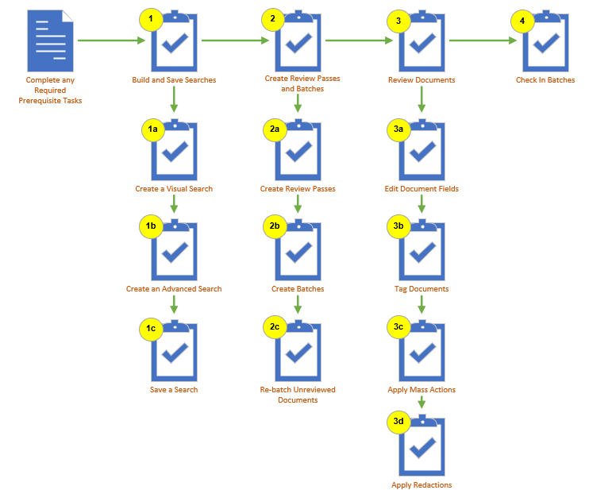
Review the Prerequisites
The following table shows the prerequisites that must be in place before you start:
Task
Notes
Assign Privileges
Make sure all users have the proper privileges assigned to them before reviewing a case. Privileges determine what activities users are allowed to undertake in Review.
Disable Pop-up Blocker
If you use a pop-up blocker in your browser, make sure to disable it for pages.
Tags and Coding Forms
To tag documents and make use of coding forms, both are required to already have been defined in your case. You can create new tags and coding forms in the Case Settings area of the ECA & Review module. See Managing Tags and Create New Coding Forms for more information.
1. Build and Save Searches
The following sections describe a high-level workflow for creating both visual and advanced searches, as well as saving a search. For a general overview of searching in , see Searching Overview.
Define a Visual Search
Create an Advanced Search
Save a Search
This section describes how to save both a Visual Search and an Advanced Search. To learn more about managing saved searches, see Work with Saved Searches.
2. Create Review Passes and Batches
Review passes are based on searches saved in .
Therefore, searches must be planned and saved in before you create
review passes. Coding forms are also required for a review pass. For each review pass, you must define:
The review pass
name and the saved search on which it is based.
The maximum size
of each batch.
A prefix for batch
numbering.
The search on
which the review pass will be based.
The coding form/tag palette that contains the fields, tags, rules, and permissions required for the review pass.
Note: You may
limit the review pass to specific user groups.
Optionally, you may define:
A batch priority (Low - Critical)
A category to define how batches are grouped.
A field indicating family relationships.
A sort order for fields in the case.
Before you get started working with review passes, you might want to watch the Review Pass Management video.
Click
here to watch the Review Pass Management video
Review Pass Management video
The following video provides a basic review of the Review Pass Management functionality. The purpose of the video is to help you:
Learn how to create Review Passes
Understand how the optional fields will impact how documents are batched
Create Review Passes
To create a review pass:
Get
Started:
Log in as an administrator.
In , click a case card.
Click the Enter Case button. The Case View appears.
In the left pane, click the Review Pass Management button,
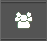
.
Click .
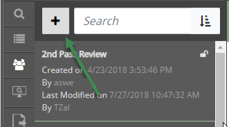
Enter a name for the review pass and complete
other required entries:
Enter
the maximum Batch Size (number
of documents) that each batch can be. This entry must be 10 or greater.
Enter
a Batch Prefix for batch names.
This name is added to sequential numbering for the batches.
Select
the Saved Search upon which the
review pass will be based.
Select the Coding Form.
As required, complete optional entries described
in steps 5 through 11.
Optional: From the Layout Style, choose Grid review (default) or Form review. Review Grid:: When the review pass is opened, the review grid appears (similar to the Results tab under Case Settings > Search). Form Review: When the review pass is opened, the Document View tabs appear.
Optional: Select a Batch
Priority to be assigned to all batches in the set.
Optional: In the Batch
by Category field, select a method for grouping documents within
batches.
Optional: Select a Family
Field to keep related documents together.
Determine whether you want to set either the Batch Priority option or the Batch by Category option.
Optional: Define a Batching (sort) Order based
on up to three fields. When entering the Review grid, the selected fields reflect the sort order (1, 2, 3) and the sort by (ascending or descending) as shown in the following example.
Optional: Click Add/Remove Groups and
select the user groups that will be reviewing the documents in this review
pass. If specific groups are not assigned to the review pass, then all
users in all user groups assigned to the case are then able to select batches
in the review pass.
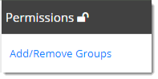
When all entries are complete, click Save.
Go to the next procedure to continue defining
the review pass.
Create Batches
To create batches:
Get
started:
Start and log in as an administrator.
In , click a case card.
Click the Enter Case button. The Case View appears.
In the left pane, click the Review Pass Management button, .
In the Review Pass Management panel, click the required review pass. If a large number
of review passes exists, take any of the following actions to find the
required one:
Scroll
vertically to locate the review pass in the list.
Sort
the keyword list names by clicking the sort button, ,
and selecting from the different options. Click a selected option again
to reverse the sort order.
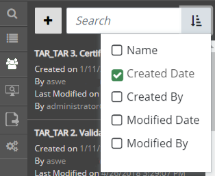
In
the Search box , start typing any of the following
items: the keyword list name, the name of the administrator who created/modified
the group, or part of the created/modified date. This is a plain text
search that searches these items in order.
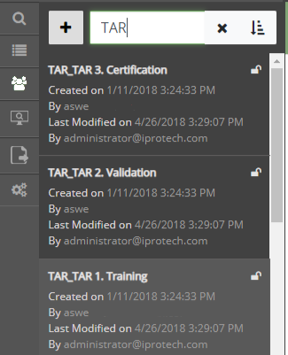
Click to
update data in the Review Pass Information
area.
Review the number of unbatched documents in
the review pass, then click Create Batches.
After batches are created, evaluate data in
the Review Pass Information area.
Click again to ensure that the data
is updated.
Repeat steps 1 through 5 to create other review passes.
Re-batch Unreviewed Documents
To re-batch documents that have not been reviewed:
If it is required that you create a new review pass, first complete the Create Review Passes section.
Click again to ensure that the data
is updated.
After it is determined in the Review Pass Information area that there are unreviewed documents, click
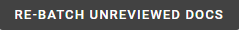
to have these documents organized into new batches.
Note: The Re-Batch Unreviewed Docs button also re-batches On Hold Batches.
3. Review Documents
Reviewing documents in a case is a multi-step and iterative process. The review tasks and the order that the review tasks are completed depends on the requirements of your business. When working on documents in a batch, reviewers may:
Review a document's images, extracted text, metadata, and production history.
Analyze related documents, including family documents, duplicates, near duplicates, conceptually similar documents, and documents that belong to the same email thread.
Edit document fields as required.
Tag documents.
Apply mass actions to multiple documents at one time.
Apply annotations and redactions to documents.
The activities explained in this section require a variety of permissions that are defined by the administrator. Ask your administrator if you are not able to perform activities required for your review.
Before you get started reviewing documents in batches, you might want to watch the Working in Batches video.
Click
here to watch the Working in Batches video
Working in Batches video
The following video provides a basic review of working in batches. The purpose of the video is to help you:
Understand how to open a review pass
Learn where to tag or code documents
Understand navigation of Review
To review batches through ECA & Review, perform the following steps:
Edit Document Fields
You can edit the fields of an individual document by performing the following steps. To update or replace field values across multiple records, see the Edit Multiple Fields via Mass Action section in this topic.
In , click a case card.
A list of review passes defined for the selected case displays beneath the case card. Select the desired review pass located on the right side of the funnel graph. The Review grid opens with the batch document set, predefined relationships, and the coding form/tag palette.
When the review pass is accessed for the first time, the Document Viewer window opens automatically with the first document in the batch. If the Document Viewer window did not open automatically when you accessed the review pass, double-click a document in the grid to open it. Perform the following steps.
Optional: If required, a different review pass may be selected from the Document Viewer window by using the Review Pass drop-down menu. The Review Passes are in alphabetical order. See Move Between Review Passes/Batches for more information.
You have the option to edit field values for a selected document in the Document Viewer window.
In the coding form, located on the right side of the Document Viewer window, do any of the following:
Double-click in the field to be edited and make required changes. Some fields may display gray text to assist with formatting entries, such as the Coding Date field.
For Hyperlink fields, enter or edit the linked file’s complete path. The entry should be a single file path in UNC format (for example, \\server001\files\smith01.msg). To view a linked file, click .
For Pick Lists, click to display the list. Click the desired item. To search for an item in the list, enter the search term. Values may be entered directly into the field not included in the pick list, however, these values will not be added to the pick list. The administrator may add/delete entire pick lists or modify the values of a pick list. Ensure you examine the pick list for any changes.
Complete any additional procedures. When finished, perform one of the following actions by using the coding form/tag palette navigation toolbar shown as follows:
Click to clear the changes.
Click to move to the first document in the batch.
Click to go to previous document and save the changes.
Click to go to next document and save the changes.
Click to move to the first document in the batch.
Click to save the changes and remain on the document.
Tag Documents
One of the primary activities when preparing documents
for discovery is applying tags. A tag is a type of “marker” that allows
you to categorize and identify specific document characteristics. Typically defined by your administrator, tags allow
you and your organization to find and identify similar documents—for example,
those that are privileged in some way, or those requiring review by a topic
expert.
Tagging a document enables you to mark the review status for that document as "Reviewed." In the following image, the document has not yet been tagged, and the "Reviewed" button displays as grayed-out.
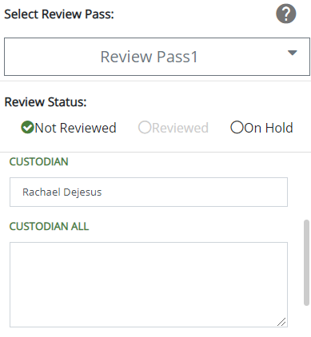
To quickly filter the documents in a batch based on their review status, use the Review Status drop-down menu located above the review grid. By selecting the various options in the drop-down menu, you can filter by reviewed documents, unreviewed documents, or all documents.
To tag documents in the Document Viewer window, perform the following steps. To tag multiple documents at a time, see Tag Related Documents via Mass Action in this topic.
In , click a case card.
A list of review passes defined for the selected case displays beneath the case card. Select the desired review pass located on the right side of the funnel graph. The Review grid opens with the batch document set, predefined relationships, and the coding form/tag palette.
When the review pass is accessed for the first time, the Document Viewer window opens automatically with the first document in the batch. If the Document Viewer window did not open automatically when you accessed the review pass, double-click a document in the grid to open it. Perform the following steps.
Optional: If required, a different review pass may be selected from the Document Viewer window by using the Review Pass drop-down menu. The Review Passes are in alphabetical order. See Move Between Review Passes/Batches for more information.
Select a Document Viewer tab to assist in the review of the document. The tabs, available at the top of the Document Viewer window, include:
Web Viewer
Image
Production
Text
Metadata
Each tab displays a different view of the document and provides a separate toolbar that allows you to perform various actions depending on the tab selected. For more information about the activities you can complete on the various Document Viewer tabs, see Work with Document Viewer Tabs.
In the tag palette located on the right side below the coding form, do any of the following:
If a tag group is collapsed, expand the tag group by clicking to see the tags. Click to collapse the tag group.
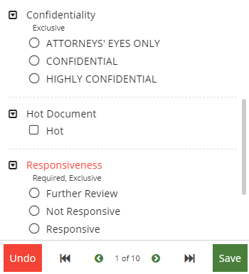
Select all applicable tags by selecting the radio button or check box beside the tag name. Multiple tags may be selected for a group that is not exclusive. Only one tag may be selected in an exclusive group.
Tip: If a keyboard shortcut has been assigned to a tag, you can apply that tag quickly to a document by pressing the keys associated with that shortcut. Ask your administrator if any shortcut keys have been assigned to your tags.
If a tag group is marked as required, you must select at least one tag within the group. The following image shows a tag group that is both required and exclusive.
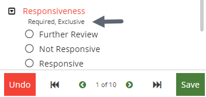
Set a Review Status for the document: Not Reviewed (default), Reviewed, or On Hold.
Note: Before you can check in a batch, every document must be marked as Reviewed.
When finished, do one of the following actions by using the coding form/tag palette navigation toolbar shown as follows:
Click to clear the changes.
Click to move to the first document in the batch.
Click to go to previous document and save the changes.
Click to go to next document and save the changes.
Click to move to the first document in the batch.
Click to save the changes and remain on the document.
Apply Mass Actions
Mass Actions are actions performed on multiple documents at one time, such as populating coding fields, OCRing documents, printing to PDF, and/or applying tags. The following sections cover the process of applying tags to multiple documents, as well as editing field values across multiple records, through mass action. For more information about other mass actions you can perform in Review, see Work with Mass Actions.
Tag Related Documents Through Mass Action
If you have the permissions required to do so, use the
following procedure to tag related documents in the same way all at once.
You can perform mass actions from any relationship menu except for Document History. See About Relationships for more information.
In , click a case card.
A list of review passes defined for the selected case displays beneath the case card. Select the desired review pass located on the right side of the funnel graph. The Review grid opens with the batch document set, predefined relationships, and the coding form/tag palette.
When the review pass is accessed for the first time, the Document Viewer window opens automatically with the first document in the batch. If the Document Viewer window did not open automatically when you accessed the review pass, double-click a document in the grid to open it. Perform the following steps.
Select a relationship tab, along the left pane of the Document Viewer window, to locate related documents and to perform mass actions. Using the left pane relationship tabs, you can search for:
Family documents
Duplicates
Near Duplicates
Documents belonging to the same email thread
Document history
Conceptually similar documents
See About Relationships for more information about searching for related documents.
Expand the desired relationship menu and pin it in place by clicking .
Select the check box to the left of the field columns to display the Mass Action button as shown in the following figure. All items are selected.
Do any of the following:
Clear items to be excluded for mass actions.
Clear the check box to the left of the field columns to clear all items in the menu.
Select individual items for mass actions.
Click Mass Action to display the coding form/tag palette dialog box as shown in the following figure.
Note: Coding form rules are not enforced when tags are applied in this manner.
Do any of the following:
Modify the coding form fields as required.
Select the applicable tag group.
Add individual tags by moving the slider over to the right as shown in the following:
Remove tags by moving the slider to the left as shown in the following:
Note: When the slider control is left in the center, the tag remains unchanged as shown in the following:
Click Apply. The Mass Action dialog box closes and applies the fields/tags to the selected documents. The previously selected documents in the selected Relationship menu revert to the default status; they are all cleared. The coding form/tag palette reflects the changes made in the Mass Actions dialog box.
Note: A prompt may appear if invalid characters and/or formats are entered in the coding form or if the number of characters exceed the total allowed for a field.
Repeat the previous steps for other groups of documents requiring to be tagged in the same way.
Edit Multiple Fields Through Mass Action
Users who have appropriate permissions can replace field
content across multiple records at one time.
Perform the steps described in Select Documents for Mass Action.
Click
in the mass action toolbar to display the menu.
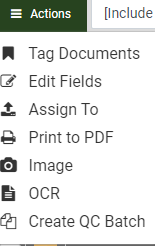
Select
the Edit Fields option.
In the
Edit Fields Options list, select one of the following actions:
Search and Replace: Find specific
content in a selected field(s) and replace it with different content.
See step 5.
Copy Field: Copy the content of
one field to another field. See step
6.
Overwrite Field: Replace whatever
content exists in a selected field(s) with different content. See step 7.
If you selected Search
and Replace:
In
the list of Available Fields,
double-click each field to be changed in the same way. Alternatively,
use SHIFT+click or CTRL+click to select a contiguous or non-contiguous
set of fields, respectively, then click “>” to move these fields into
the Selected Fields list.
Enter
the content to be replaced in the Search
for field. This entry is not case sensitive.
Tip: An entry is required in the Searchfor field. If you want to replace empty fields with content, use the
Overwrite Field option.
Enter
the new content in the Replace with field. The format of your entry must
match the field type (for example, if a Date field must be changed
from 01/01/2014 to another date, use the same format for your replacement
entry). For text entries, the capitalization used here will be used in
the selected field(s).
Skip to step 8.
Example:
All or part of a field’s content can be entered. For example, a Custodian's
name might be entered as both “Jon Smith” and “John Smith”
in your case. For consistency, you could search for “Jon” and replace
it with “John” so that the company name is consistent. See the
following:
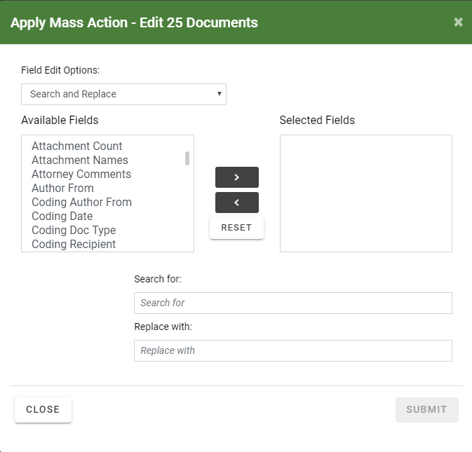
If you
selected Copy Field:
In
the Copy From field, select the
field that contains the content you want to copy.
In
the Copy To field, select the
field in which the same content should be used.
Skip
to step 8.
If you selected Overwrite
Field:
In
the list of Available Fields, double-click each field to be changed in
the same way. Alternatively, use SHIFT+click or CTRL+click to select a
contiguous or non-contiguous set of fields, respectively, then click “>”
to move these fields into the Selected Fields list.
Enter
the new content in the Overwrite Selected Field with this Text box. The format of your entry must match the field type (for example, if a Date
field must be changed from 01/01/2014 to another date, use the same
format for your replacement entry). For text entries, the capitalization used here will be used in the selected field(s).
Go
to step 8.
Click
.
To perform another mass action on the same
selected documents, click Edit Fields and repeat steps 1 through 8.
Apply Redactions
Redactions obscure the content of image files so that only appropriate
information is visible in the files you prepare for discovery. In , up to 99 redaction categories—with different colors and labels
for each—may be used. Redactions are viewed in as solid (if user has appropriate permissions.)
Redact Image Content
If you have sufficient permissions, redact information
in an image as follows:
For
a selected document, in the Review
pane’s Image tab, locate the information
to be redacted.
Click next to the Redaction button
and select the required redaction from the Redaction Category menu,
as shown in the following figure:
If required, click the button again to activate
the redaction action.
Point, click, and drag across the text or image area that is
to be redacted..
When the selection is complete, release the
mouse button. An example of redacted text is shown as follows:
Repeat steps 1 through 5 to apply other redactions.
When finished, click
or another button to stop the redaction activity.
Show Text Behind Redactions
For any or all redactions in the image, you can expose the text by clicking located to the right of the Redaction drop-down menu. When you click this icon, it changes to , You can click again to hide the text. An example of exposed text behind a redaction is shown as follows:
Resize a Redaction
If you have sufficient permissions, change the size
of a redaction as follows:
For
a selected document, in the Review
pane’s Image tab, locate a redaction
to be resized.
Click the redaction to select it, then drag
an edge or a corner to resize it.
Repeat steps 1 and 2 to resize additional redactions..
Move a Redaction
If you have sufficient permissions, move a redaction
as follows:
For
a selected document, in the Review
pane’s the Image tab, locate a
redaction to be moved.
Place the mouse pointer in the center of the
redaction and drag it to the required location, then release the mouse button.
Repeat steps 1 and 2 to move additional redactions.
Delete a Redaction
Note: No warning message
or Undo function exists when deleting redactions. Be sure
the selection is what you want to make before deleting.
If you have sufficient permissions, delete redactions
as follows:
For
a selected document, in the Review
pane’s Image tab, locate a redaction
to be to be deleted.
On the Image
tab toolbar, click .
Left-, then right-click the redaction and select
Delete.
When finished, click
or another button to stop the redaction activity.
4. Check In Batches
Checking in a batch is available through the Review Grid layout. When entering the review pass for the first time, the Document Viewer window automatically opens in the foreground and displays the first document in the batch. The review grid remains in the background. The grid displays a highlight for the corresponding document shown in the Document Viewer window.
Proceed to review the documents in the batch. When ready, select the Check In button above the review grid. Once the batch is checked in, the next available batch then opens in the same review pass by default.
To check in a reviewed batch, perform the following steps:
In the Document Viewer window, review each document in the batch as described previously.
After the last document is reviewed for the batch, close the Document Viewer window.
From the review grid, click to display the Check In Batch dialog box shown as follows:
Select the option Open next available batch if you want to review the next available batch.
Click Submit. A prompt displays to indicate that the batch was checked in, and the Document Viewer window opens and displays the first document for the next batch provided the option, “Open next available batch” was selected.


 .
. ,
and selecting from the different options. Click a selected option again
to reverse the sort order.
,
and selecting from the different options. Click a selected option again
to reverse the sort order. to
update data in the Review Pass Information
area.
to
update data in the Review Pass Information
area.


 .
.  to display the list. Click the desired item. To search for an item in the list, enter the search term. Values may be entered directly into the field not included in the pick list, however, these values will not be added to the pick list. The
to display the list. Click the desired item. To search for an item in the list, enter the search term. Values may be entered directly into the field not included in the pick list, however, these values will not be added to the pick list. The 
 to clear the changes.
to clear the changes. to move to the first document in the batch.
to move to the first document in the batch. to go to previous document and save the changes.
to go to previous document and save the changes. to go to next document and save the changes.
to go to next document and save the changes. to move to the first document in the batch.
to move to the first document in the batch. to save the changes and remain on the document.
to save the changes and remain on the document.
 to see the tags. Click
to see the tags. Click  to collapse the tag group.
to collapse the tag group.
 .
.


 in the mass action toolbar to display the menu.
in the mass action toolbar to display the menu.  next to the Redaction button
and select the required redaction from the Redaction Category menu,
as shown in the following figure:
next to the Redaction button
and select the required redaction from the Redaction Category menu,
as shown in the following figure:

 or another button to stop the redaction activity.
or another button to stop the redaction activity. located to the right of the Redaction drop-down menu. When you click this icon, it changes to
located to the right of the Redaction drop-down menu. When you click this icon, it changes to  , You can click
, You can click 
 .
. to display the Check In Batch dialog box shown as follows:
to display the Check In Batch dialog box shown as follows: